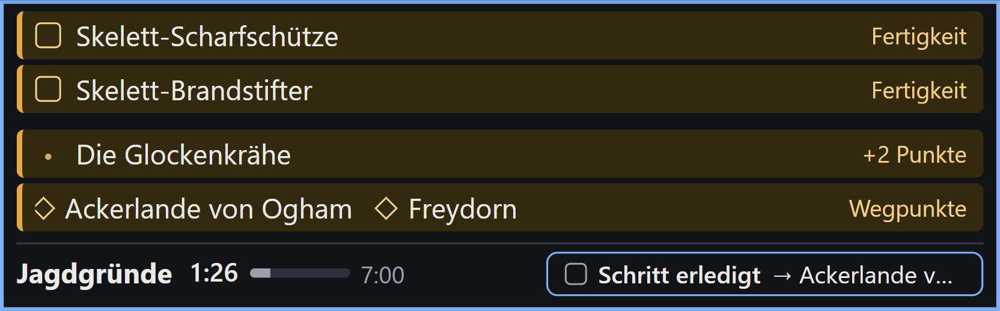
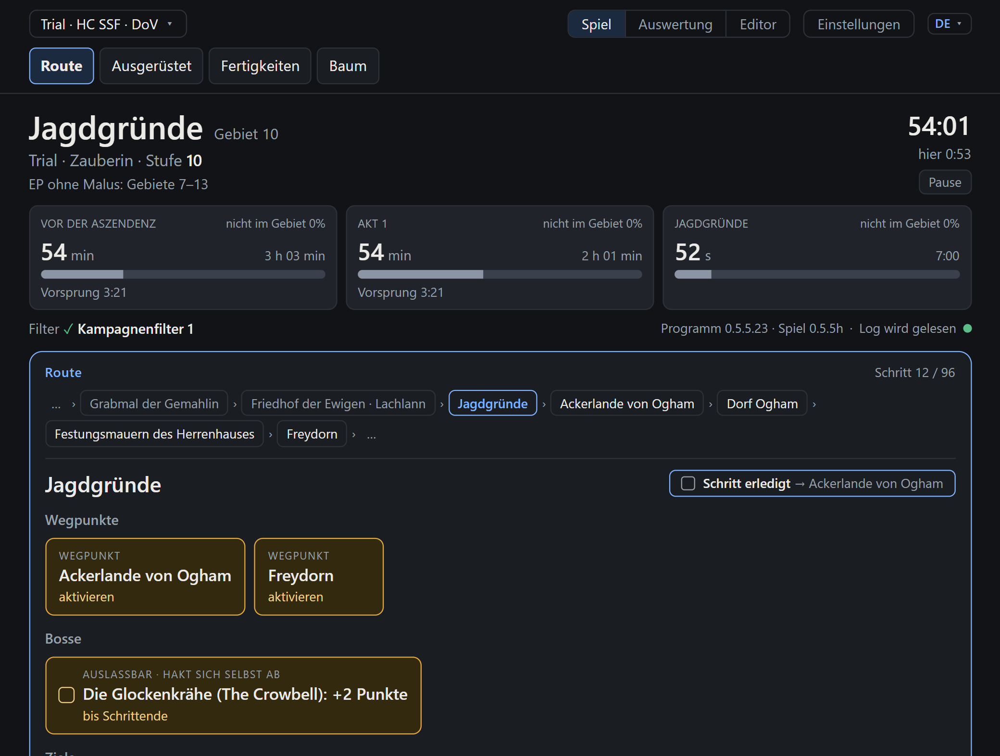
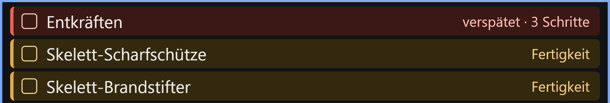
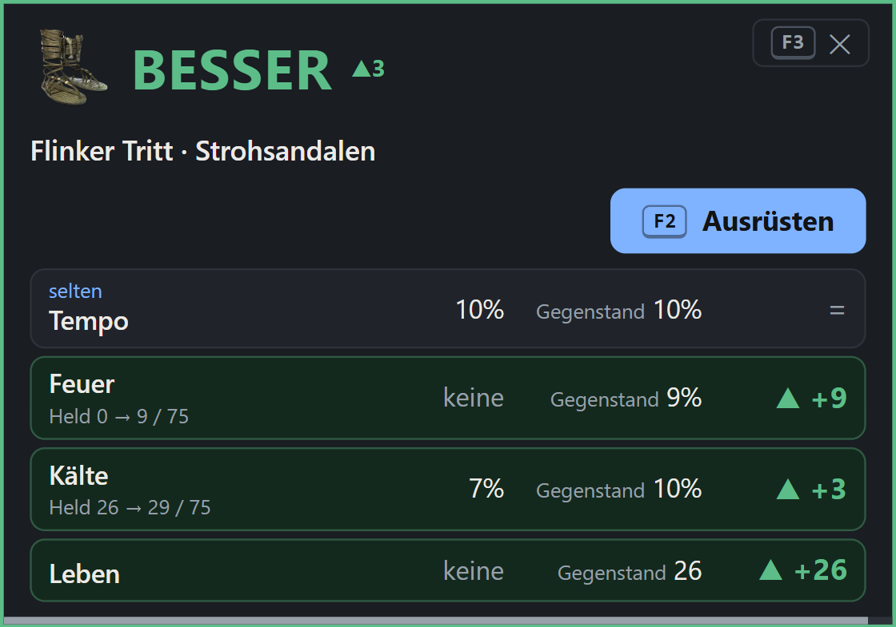
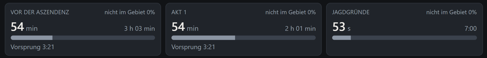
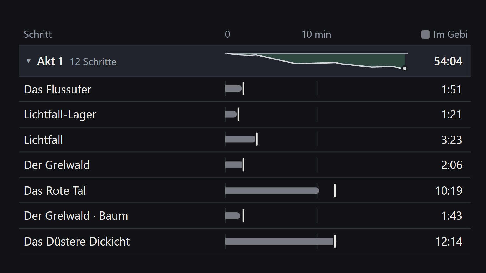
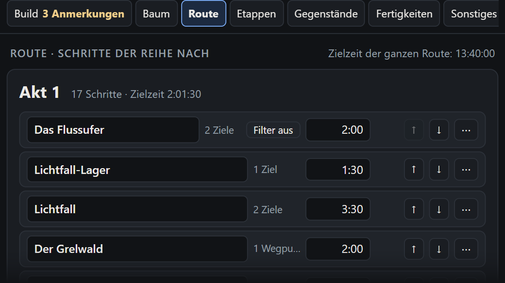

Spiel wie ein Profi
Hunderte Stunden Versuch und Irrtum hat dir der Autor des Plans schon abgenommen. Runbook führt dich durch den Plan: wohin du gehst, wen du tötest und was du in jedem Gebiet mitnimmst.
Für Windows herunterladenFür Build-Autoren
Die erste Version ist noch nicht veröffentlicht

Du spielst einfach
Du betrittst ein Gebiet – Runbook zeigt schon, was dort zu tun ist. Stufe, Belohnungen und Knoten im Fertigkeitenbaum hakt es selbst ab.

Die rote Zeile bleibt
Der Autor des Plans weiß, was bis zu welchem Schritt geholt und ausgerüstet sein muss. Bist du zu spät dran, wird die Zeile rot und bleibt, bis du es erledigt hast.

Ausrüsten oder wegwerfen
F2 über einem Gegenstand – und du siehst, ob er besser oder schlechter ist als der ausgerüstete. Nach den Stats, die der Autor des Plans gewählt hat.

Im Tempo des Autors
Jeder Schritt und jeder Akt hat seine Zeit aus dem Plan. Du siehst, wo du Vorsprung hast und wo du zurückliegst.

Analyse
Jede Minute zählt
Nach dem Spielen zeigt dir „Auswertung“, wo die Zeit geblieben ist: Schritt für Schritt, im Gebiet, in der Stadt und abseits der Route. Vergleiche mit deinem vorigen Helden – und du siehst, wo du schneller geworden bist.


Du weißt, wie es besser geht?
Bau deinen eigenen Plan. Die Kampagne ist schon angelegt: jedes Gebiet, jeder Boss und jede Belohnung – ergänze deinen Build und die Fristen.
PoE2 Runbook
Fragen
Ich habe schon einen Guide. Wozu brauche ich Runbook?
Einen Guide musst du lesen, im Kopf behalten und mit dem Spiel abgleichen. Runbook begleitet dich: Es weiß, in welchem Gebiet du bist, und zeigt, was jetzt zu tun ist.
Für meine Klasse gibt es keinen Plan. Was tun?
Pläne erscheinen im Katalog, wenn Autoren sie teilen. Bis dahin kannst du deinen eigenen bauen: Die Kampagne ist schon angelegt, es fehlt nur noch dein Build.
Ein Patch ist erschienen. Funktioniert Runbook dann noch?
Nach einem Patch braucht Runbook eine neue Version. Solange es sie nicht gibt, warnt das Programm, dass das Spiel neuer ist. Sobald sie da ist, aktualisiert es sich mit einem Klick.
Die Liste erscheint nicht über dem Spiel
Das passiert, wenn das Spiel im Modus „Vollbild“ läuft: Es verdeckt dann die Fenster von Runbook. Wähle in den Optionen des Spiels den Modus „Vollbild-Fenster“ – dann erscheint die Liste. Falls nicht, prüfe in Runbook unter „Einstellungen“, ob „Fenster über dem Spiel“ eingeschaltet ist.
Windows lässt mich das Installationsprogramm nicht starten
Das Installationsprogramm ist noch nicht signiert, und Windows kennt seinen Herausgeber nicht. Klicke auf „Weitere Informationen“, dann auf „Trotzdem ausführen“. So prüfst du die Datei vor dem Start
Mir fehlt eine Funktion. Kann ich sie mir wünschen?
Ja. Das ist die erste Version, das Programm wird weiterentwickelt, und Wünsche aller Art sind willkommen: Schreib, was fehlt oder was nicht richtig funktioniert. Dem Autor schreiben · Issues auf GitHub